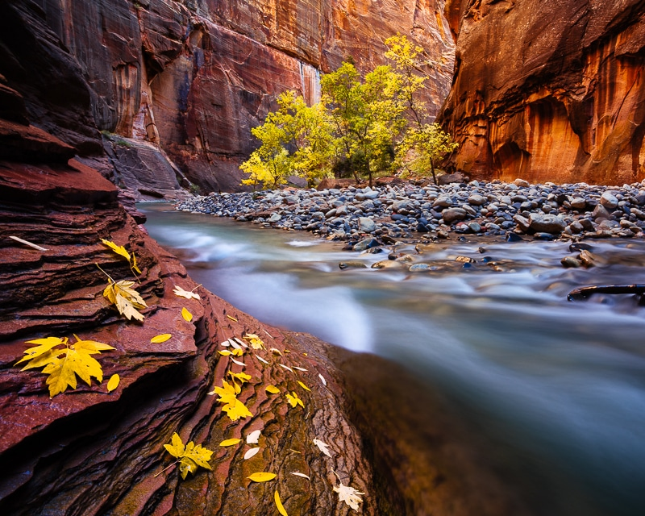
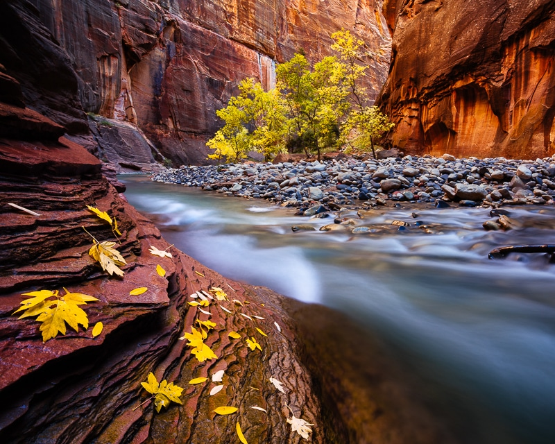

Mission
The purpose of thise page is to let know the people thise place to visit and have great experence for all type of people
Zion Park is already a tourist attraction but I realized while was there that the tourism has decreased with the passage of time, it still has a lot of people but not compared to previous years. I would just like as many people as possible to know about the experience that you can find there
I have the experience to work in that zone an it was a wonderfull experience since the way to get there everyday, it was really pretty driving watching the montains and the nature be there it was especial to watch the sunset, it just have vibre so relax even that i was working it feel like vacation. And visit the park it can be challenging because some trials they are kind of hard but it so worth it for the beautiful nature arond of you it make evrething worth it.
 
